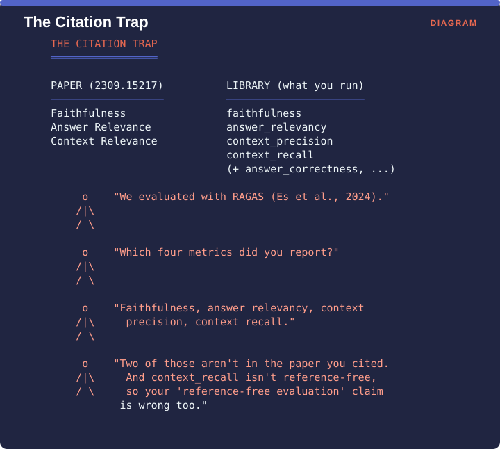
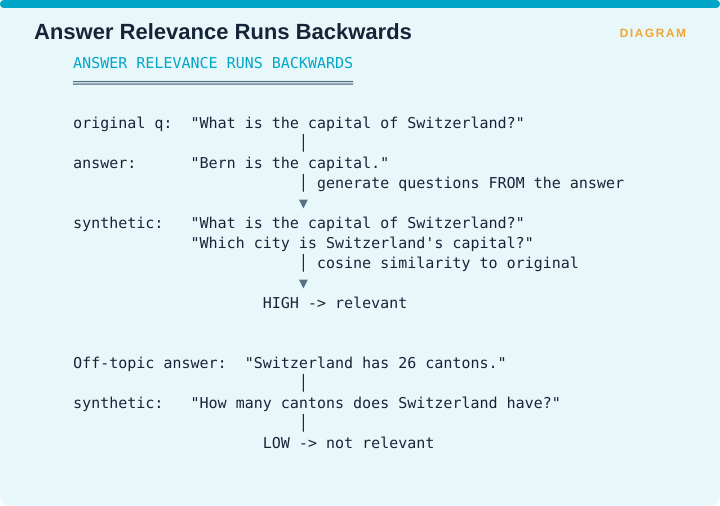

Measuring Retrieval › C.3 RAGAS
One-line: Reference-free evaluation of RAG on three axes: is the answer grounded, does it answer the question, and was the context relevant?
Facets: Correctness | claim | free/judge | E2E | ESTABLISHED VERIFIED Source: Es, James, Espinosa-Anke & Schockaert, EACL 2024 System Demonstrations, pp. 150-158, doi 10.18653/v1/2024.eacl-demo.16 · arXiv:2309.15217
Every claim-level method in §C.2 needs something to verify against, and the obvious candidate is a ground-truth answer somebody wrote. Most teams starting out do not have those and cannot afford to build them, which means they measure nothing at all. RAGAS exists to give you numbers on day one by verifying the answer against the retrieved context rather than against a reference.
The paper defines three components, being Faithfulness, Answer Relevance and Context Relevance.
The library, as commonly used and documented, reports four, being faithfulness, answer relevancy, context precision and context recall, with context relevance largely superseded.

The figure works the resulting exchange. A team says they evaluated with RAGAS and cites Es et al. 2024. Asked which metrics they reported, they name faithfulness, answer relevancy, context precision and context recall. Two of those four do not appear in the paper they cited, and context_recall is not reference-free, so their claim to have done reference-free evaluation is wrong as well.
Two consequences matter. Citing the paper does not describe your setup, so if you report context_recall you need to cite the library version alongside the paper. And the reference-free claim breaks, because the paper’s entire selling point is evaluation without ground-truth annotations while Context Recall requires a reference answer. The moment you add it, RAGAS is no longer reference-free, and the main reason you chose it has evaporated.
Faithfulness runs the pipeline from §C.2. A language model rewrites the answer into standalone atomic statements, each statement is checked for entailment against the retrieved context, and the score is the number of supported statements divided by the total.
Answer Relevance is computed by an inversion that is worth understanding, because it is cleverer than it first appears and its blind spot follows directly from the design.

Rather than comparing the answer to the question, it generates questions from the answer and then measures how similar those are to the question that was actually asked. Given the question “what is the capital of Switzerland?” and the answer “Bern is the capital”, the synthetic questions come back as “what is the capital of Switzerland?” and “which city is Switzerland’s capital?”, which are highly similar to the original, so the answer scores as relevant. Given the off-topic answer “Switzerland has 26 cantons”, the synthetic question is “how many cantons does Switzerland have?”, which is not similar, so the answer scores as irrelevant.
The blind spot is specific. This measures topicality rather than correctness, so a confidently wrong answer to exactly the right question scores high on Answer Relevance.
Startup or early-stage RAG. The right first choice. Being reference-free means you can measure something on day one without an annotation budget, and something beats nothing decisively.
Regulated enterprise. Insufficient on its own, because faithfulness without a retrieval-hit denominator reproduces exactly the Adherence Paradox from Supplement A §A.3.1. Pair it with CUE or with RAGChecker’s Self-Knowledge.
Specialized technical domains such as semiconductors, clinical coding or tax law. These carry the highest risk of the prompt-transfer problem, so validate RAGAS scores against a small human-labelled set in your own domain before trusting the aggregate. If agreement is poor, the framework is not broken, it is out of domain.
Use RAGAS as your entry-level, always-on continuous integration metric, in its paper-faithful three-metric form, and be precise about which version you are citing.
The moment you add context_recall you have crossed into reference-based evaluation, so make that choice deliberately and compare it against RAGChecker, which does reference-based claim-level diagnosis considerably more thoroughly.
Never report a single averaged RAGAS score, because the decomposition is where all the value is.
Measuring Retrieval · Madhava Gaikwad · First edition, September 2026